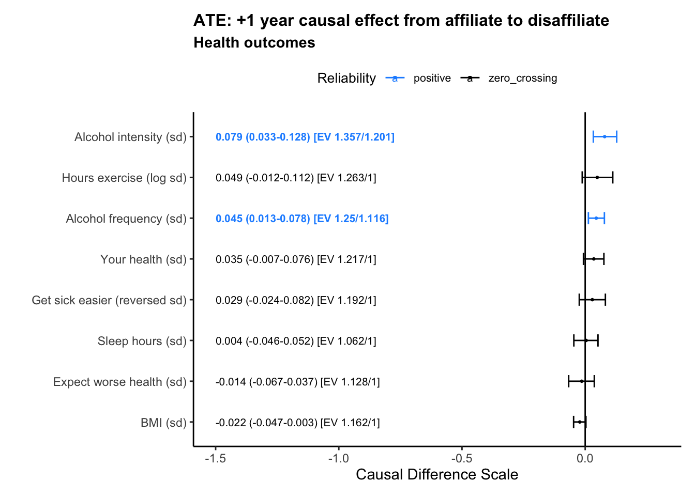
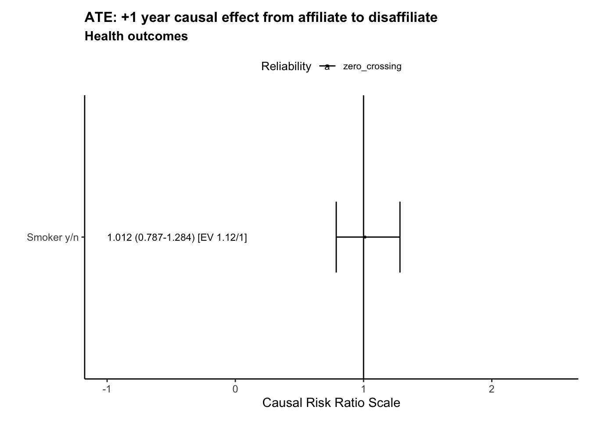
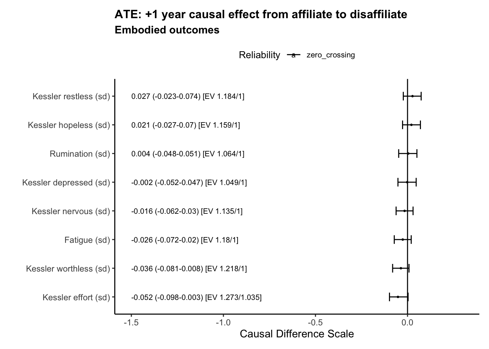
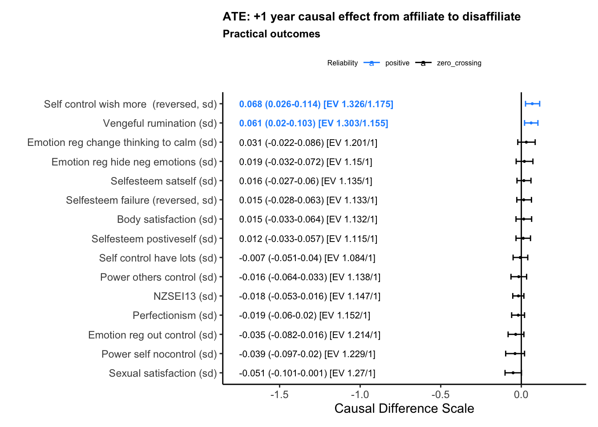

Effect of religious de-identification on multi-dimensional well-being
An outcome-wide study
Abstract
Counterfactual Prediction
Introduction
Max Weber described the loss of religion as “the disenchantment of the world.”
Sample
Change in exposure
This transition matrix describes the shifts from religious affiliation at baseline (NZAVS time 2018) and the following year (NZAVS wave 2019). To emulate an experiment with observational data, we selected only those participants who were identified as religious at baseline and who reported a religious identification one year later. There were 12,600 participants who met these criteria. As indicated in Table 1,1,977 religiously affiliated participants between NZAVS wave 2018 (the baseline year) and NZAVS wave 2019 (the exposure year). Because effects must follow causes, we measured outcomes in the following year (NZAVS wave 2020). Use doubly robust methods that combine propensity scores and regression stratification, we balanced the baseline sample on the distribution of confounders that, if not adjusted, might lead to an association between the exposure (loss of religious affiliation) and the outcomes (well-being across multiple outcomes.)
| From | religious yes | religious not |
|---|---|---|
| religious yes | 10623 | 1977 |
Results
Effects on health

Effects on embodied well-being

Effects on practical well-being

Effects on reflective well-being
Discussion
Here